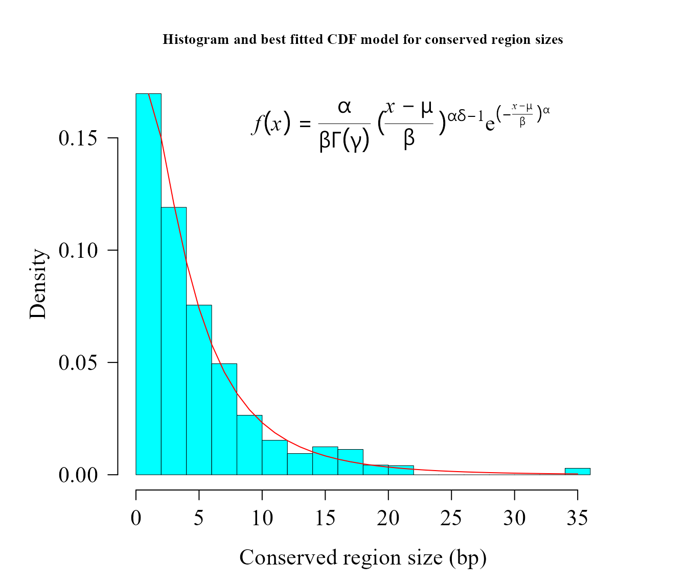
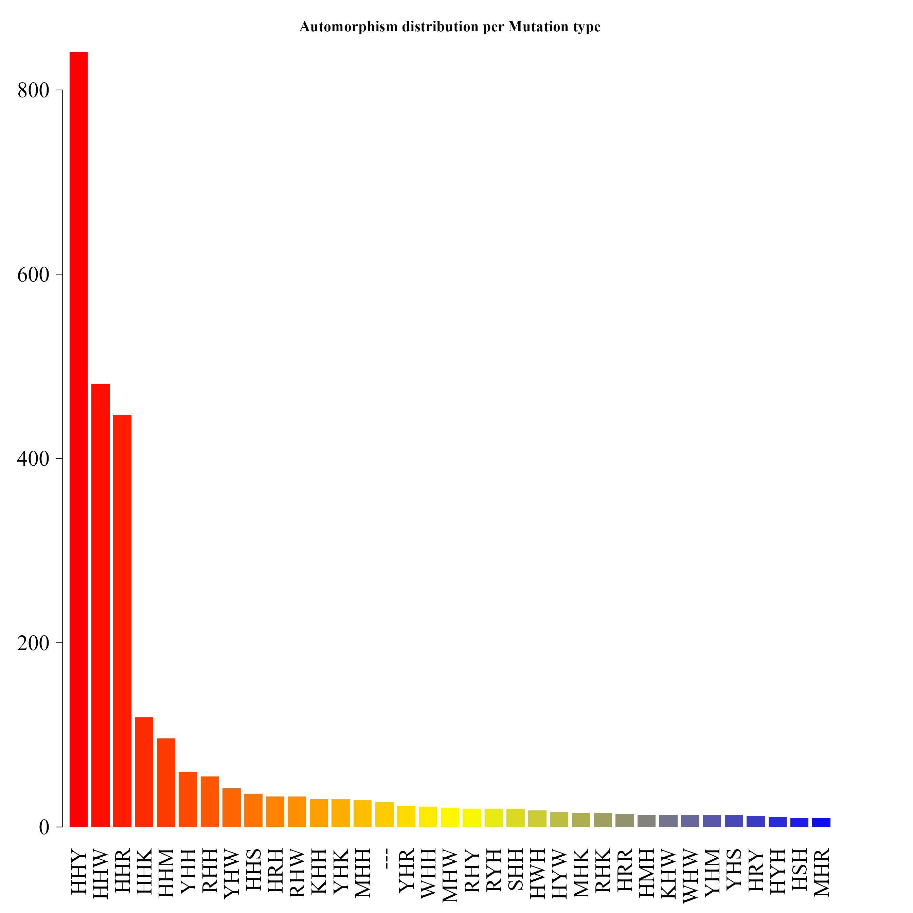

Automorphism analysis on COVID-19 data
Robersy Sanchez
Department of Biology. Pennsylvania State University, University Park, PA 16802rus547@psu.edu
21 May 2022
Source:vignettes/covid_19.Rmd
covid_19.RmdAbstract
Analysis of COVID-19 mutational events in terms of automorphisms.
library(Biostrings)
library(GenomAutomorphism)
library(usefr)
library(latex2exp)SARS coronavirus GZ02 vs bat-SL-CoVZC45
URL <- paste0("https://github.com/genomaths/seqalignments/raw/master/",
"COVID-19/AY390556.1_265-13398_13398-21485_RNA-POL_SARS_COVI_GZ02.fas")
covid_aln2 <- readDNAMultipleAlignment(filepath = URL)
covid_aut <- automorphisms(
seq = covid_aln2,
group = "Z64",
cube = c("ACGT", "TGCA"),
cube_alt = c("CATG", "GTAC"),
verbose = FALSE)
covid_aut
#> Automorphism object with 7100 ranges and 6 metadata columns:
#> seqnames ranges strand | seq1 seq2 coord1 coord2 autm cube
#> <Rle> <IRanges> <Rle> | <character> <character> <numeric> <numeric> <numeric> <character>
#> [1] 1 1 + | ACC ATC 17 49 33 ACGT
#> [2] 1 2 + | TAT TAT 15 15 1 ACGT
#> [3] 1 3 + | GTT GTT 59 59 1 ACGT
#> [4] 1 4 + | GGT GGT 43 43 1 ACGT
#> [5] 1 5 + | ATT ATT 51 51 1 ACGT
#> ... ... ... ... . ... ... ... ... ... ...
#> [7096] 1 7096 + | TTA TTA 60 60 1 ACGT
#> [7097] 1 7097 + | GGC GGC 41 41 1 ACGT
#> [7098] 1 7098 + | GTT GTT 59 59 1 ACGT
#> [7099] 1 7099 + | CTA CAA 52 4 5 ACGT
#> [7100] 1 7100 + | TCA TCA 28 28 1 ACGT
#> -------
#> seqinfo: 1 sequence from an unspecified genome; no seqlengths
counts <- table(covid_aut$cube[ covid_aut$autm != 1 | is.na(covid_aut$autm) ])
par(family = "serif", cex = 0.9, font = 2, mar=c(4,6,4,4))
barplot(counts, main="Automorphism distribution",
xlab="Genetic-code cube representation",
ylab="Fixed mutational events",
col=c("darkblue","red", "darkgreen"),
border = NA, axes = FALSE, #ylim = c(0, 2000),
cex.lab = 2, cex.main = 1.5, cex.names = 2)
axis(2, at = c(0, 500, 1000, 1500, 2000), cex.axis = 1.5)
mtext(side = 1,line = -1.5, at = c(0.7, 1.9, 3.1, 4.3, 5.5),
text = paste0( counts ), cex = 1.4,
col = c("white","yellow", "black"))
Analysis of conserved regions
conserv2 <- conserved_regions(x = covid_aut)
conserv2
#> AutomorphismByCoef object with 3536 ranges and 5 metadata columns:
#> seqnames ranges strand | seq1 seq2 autm mut_type cube
#> <Rle> <IRanges> <Rle> | <character> <character> <numeric> <character> <character>
#> [1] 1 2-9 + | TAT TAT 1 HHH ACGT
#> [2] 1 2-9 + | GTT GTT 1 HHH ACGT
#> [3] 1 2-9 + | GGT GGT 1 HHH ACGT
#> [4] 1 2-9 + | ATT ATT 1 HHH ACGT
#> [5] 1 2-9 + | GGG GGG 1 HHH ACGT
#> ... ... ... ... . ... ... ... ... ...
#> [3532] 1 7095-7098 + | TGA TGA 1 HHH ACGT
#> [3533] 1 7095-7098 + | TTA TTA 1 HHH ACGT
#> [3534] 1 7095-7098 + | GGC GGC 1 HHH ACGT
#> [3535] 1 7095-7098 + | GTT GTT 1 HHH ACGT
#> [3536] 1 7100 + | TCA TCA 1 HHH ACGT
#> -------
#> seqinfo: 1 sequence from an unspecified genome; no seqlengthsNext, function fitCDF is applied to find the best fitted probability function to the the sizes of conserved regions.
widths <- width(conserv2)
dist2 <- fitCDF(widths, distNames = c(3, 7, 9, 10, 11, 12, 19, 20), plot = TRUE,
loss.fun = "cauchy")
#>
#> *** Fitting Half-Normal distribution ...
#> .Fitting Done.
#>
#> *** Fitting Gamma distribution ...
#> .Fitting Done.
#>
#> *** Fitting Generalized 4P Gamma distribution ...
#> .Fitting Done.
#>
#> *** Fitting Generalized 3P Gamma distribution ...
#> .Fitting Done.
#>
#> *** Fitting Weibull distribution ...
#> .Fitting Done.
#>
#> *** Fitting 3P Weibull distribution ...
#> .Fitting Done.
#>
#> *** Fitting Exponential distribution ...
#> .Fitting Done.
#>
#> *** Fitting 2P Exponential distribution ...
#> .Fitting Done.
#> * Estimating Studentized residuals for Generalized 4P Gamma distribution
#> * Plots for Generalized 4P Gamma distribution...
dist2
#> ggamma CDF model
#> ------
#> Parameters:
#> Estimate Std. Error t value Pr(>|t|)
#> alpha 1.556412038 0.008615187 180.65911 < 2.22e-16 ***
#> scale 5.565571212 0.030506787 182.43715 < 2.22e-16 ***
#> mu 0.459042540 0.004525702 101.43012 < 2.22e-16 ***
#> psi 0.452986242 0.004816870 94.04161 < 2.22e-16 ***
#> ---
#> Signif. codes: 0 '***' 0.001 '**' 0.01 '*' 0.05 '.' 0.1 ' ' 1
#>
#> Residual standard error: 1.633916e-05 on 3532 degrees of freedom
#> Number of iterations to termination: 30
#> Reason for termination: Relative error in the sum of squares is at most `ftol'.
#>
#> Goodness of fit:
#> Adj.R.Square rho R.Cross.val AIC
#> gof 1 1 0.9997969 -27337.94
par(lwd = 0.5, cex.axis = 2, cex.lab =1.4,
cex.main = 2, mar=c(5,6,4,4), family = "serif")
hist(widths, 20, freq = FALSE, las = 1, family = "serif",
col = "cyan1", cex.main = 0.9,
main = "Histogram and best fitted CDF model for conserved region sizes",
xlab = "Conserved region size (bp)", yaxt = "n", ylab="", cex.axis = 1.4)
axis(side = 2, cex.axis = 1.4, las = 2)
mtext("Density", side = 2, cex = 1.4, line = 3.5)
x1 <- seq(1, 150, by = 1)
txt <- TeX(r'($\textit{f}(\textit{x}) = \frac{\alpha}{\beta\Gamma(\gamma)}
{(\frac{\textit{x - \mu}}{\beta})}^{\alpha\delta-1}
e^{(-\frac{\textit{x - \mu}}{\beta})^\alpha}$)')
lines(x1, dggamma(x1,
alpha = coef(dist2$bestfit)[1],
scale = coef(dist2$bestfit)[2],
psi = coef(dist2$bestfit)[3]
),
col = "red", lwd = 1)
mtext(txt, side = 3, line = -4, cex = 1.4, adj = 0.7)
After apply Bootstrap test for Goodness of fit, tt seems to be that we have no reasons to reject the hypothesis that the sizes of conserved regions follows Generalized Gamma distribution.
mcgoftest(
varobj = widths,
model = dist2,
stat = "ks")
#> *** Permutation GoF testing based on Kolmogorov-Smirnov statistic ( parametric approach ) ...
#> KS.stat.D mc_p.value KS.stat.p.value sample.size num.sampl
#> 0.7859163 1.0000000 0.0000000 3536.0000000 999.0000000
mcgoftest(
varobj = widths,
model = dist2,
stat = "ad")
#> *** Permutation GoF testing based on Anderson–Darling statistic ( parametric approach ) ...
#> AD.stat mc_p.value sample.size num.sampl
#> 190.1024 1.0000 3536.0000 999.0000Grouping automorphism by automorphism’s coefficients. Types of mutations
autby_coef2 <- automorphism_bycoef(covid_aut)
autby_coef2 <- autby_coef2[ autby_coef2$autm != 1 & autby_coef2$autm != -1 ]Alignment gaps denoting indel mutations are labeled as “—”.
counts2 <- table(autby_coef2$mut_type)
counts2 <- sort(counts2, decreasing = TRUE)
count. <- counts2[ counts2 > 9 ]
par(family = "serif", cex.axis = 2, font = 2, las = 1,
cex.main = 1.4, mar = c(6,3,4,4))
barplot(count., main="Automorphism distribution per Mutation type",
col = colorRampPalette(c("red", "yellow", "blue"))(36),
border = NA, axes = FALSE,las=2)
axis(side = 2, cex.axis = 2, line = -1.8 )
counts2
#>
#> YHH WHH RHH HYH HHY MHH HWH HRH KHH HHR SHH HHW HKH HMH YYH HHK HHM RWH RYH YHY HSH SYH YRH MYH RRH WYH KYH MRH RHY KRH
#> 412 403 335 318 230 189 180 178 156 144 100 85 67 65 27 25 23 23 22 16 15 14 13 12 12 11 10 10 10 9
#> YHR HHS MHY WWH YWH HRY MHR RHR WRH HWY HYR KHW KWH RKH WHY YKH HYY SRH WHW YSH HKY MHW WHR WMH YHW YMH HMY HWR MHK MWH
#> 9 8 8 8 8 7 7 7 7 6 6 6 6 6 6 6 5 5 5 5 4 4 4 4 4 4 3 3 3 3
#> SHR SHY WSH YHK YHM HRW KHR KHY KKH KSH MKH RHM RHW RMH SHW SMH SSH SWH WHK WHM WKH YYR HKK HKR HMR HMW HRM HRR HSW HWS
#> 3 3 3 3 3 2 2 2 2 2 2 2 2 2 2 2 2 2 2 2 2 2 1 1 1 1 1 1 1 1
#> HYM KHK KHS MHM MHS MKM MSW MWR MWY RHK RYR SKH SSY WWS YHS YRY YYS
#> 1 1 1 1 1 1 1 1 1 1 1 1 1 1 1 1 1SARS coronavirus GZ02 vs bat-SL-CoVZC45 and Bat SARS-like coronavirus isolate Rs7327
data(covid_autm, package = "GenomAutomorphism")
covid_autm
#> Automorphism object with 9722 ranges and 6 metadata columns:
#> seqnames ranges strand | seq1 seq2 coord1 coord2 autm cube
#> <Rle> <IRanges> <Rle> | <character> <character> <numeric> <numeric> <numeric> <character>
#> [1] 1 1 + | ATG ATG 50 50 1 ACGT
#> [2] 1 2 + | GAG GAG 10 10 1 ACGT
#> [3] 1 3 + | AGC AGC 33 33 1 ACGT
#> [4] 1 4 + | CTT CTT 55 55 1 ACGT
#> [5] 1 5 + | GTT GTT 59 59 1 ACGT
#> ... ... ... ... . ... ... ... ... ... ...
#> [9718] 1 9718 + | TCA TCA 28 28 1 ACGT
#> [9719] 1 9719 + | ACT ACT 19 19 1 ACGT
#> [9720] 1 9720 + | CAG CAG 6 6 1 ACGT
#> [9721] 1 9721 + | GCA GCA 24 24 1 ACGT
#> [9722] 1 9722 + | TAA TAA 12 12 1 ACGT
#> -------
#> seqinfo: 1 sequence from an unspecified genome; no seqlengths
conserv <- conserved_regions(covid_autm)
conserv
#> AutomorphismByCoef object with 6348 ranges and 5 metadata columns:
#> seqnames ranges strand | seq1 seq2 autm mut_type cube
#> <Rle> <IRanges> <Rle> | <character> <character> <numeric> <character> <character>
#> [1] 1 1-19 + | ATG ATG 1 HHH ACGT
#> [2] 1 1-19 + | GAG GAG 1 HHH ACGT
#> [3] 1 1-19 + | AGC AGC 1 HHH ACGT
#> [4] 1 1-19 + | CTT CTT 1 HHH ACGT
#> [5] 1 1-19 + | GTT GTT 1 HHH ACGT
#> ... ... ... ... . ... ... ... ... ...
#> [6344] 1 9683-9722 + | GGA GGA 1 HHH ACGT
#> [6345] 1 9683-9722 + | TCT TCT 1 HHH ACGT
#> [6346] 1 9683-9722 + | TCA TCA 1 HHH ACGT
#> [6347] 1 9683-9722 + | GCA GCA 1 HHH ACGT
#> [6348] 1 9683-9722 + | TAA TAA 1 HHH ACGT
#> -------
#> seqinfo: 1 sequence from an unspecified genome; no seqlengths
consvr <- c(conserv, conserv2)
widths <- width(consvr)
dist <- fitCDF(widths, distNames = c(2, 3, 7, 9, 10, 11, 19, 20), plot = TRUE,
loss.fun = "cauchy")
#>
#> *** Fitting Log-normal distribution ...
#> .Fitting Done.
#>
#> *** Fitting Half-Normal distribution ...
#> .Fitting Done.
#>
#> *** Fitting Gamma distribution ...
#> .Fitting Done.
#>
#> *** Fitting Generalized 4P Gamma distribution ...
#> .Fitting Done.
#>
#> *** Fitting Generalized 3P Gamma distribution ...
#> .Fitting Done.
#>
#> *** Fitting Weibull distribution ...
#> .Fitting Done.
#>
#> *** Fitting Exponential distribution ...
#> .Fitting Done.
#>
#> *** Fitting 2P Exponential distribution ...
#> .Fitting Done.
#> * Estimating Studentized residuals for Generalized 4P Gamma distribution
#> * Plots for Generalized 4P Gamma distribution...
dist
#> ggamma CDF model
#> ------
#> Parameters:
#> Estimate Std. Error t value Pr(>|t|)
#> alpha 0.764305824 0.003181981 240.1981 < 2.22e-16 ***
#> scale 24.332739325 0.242126684 100.4959 < 2.22e-16 ***
#> mu 0.755945576 0.002823018 267.7792 < 2.22e-16 ***
#> psi 0.729853409 0.005150295 141.7110 < 2.22e-16 ***
#> ---
#> Signif. codes: 0 '***' 0.001 '**' 0.01 '*' 0.05 '.' 0.1 ' ' 1
#>
#> Residual standard error: 6.662038e-05 on 9880 degrees of freedom
#> Number of iterations to termination: 23
#> Reason for termination: Relative error in the sum of squares is at most `ftol'.
#>
#> Goodness of fit:
#> Adj.R.Square rho R.Cross.val AIC
#> gof 0.9999999 0.9999999 0.9993681 -63544.97Joining the datasets increases the sample size and improved predictions in respect to the comparison SARS coronavirus GZ02 vs Bat SARS-like coronavirus alone.
par(lwd = 0.5, cex.axis = 2, cex.lab =1.4,
cex.main = 2, mar=c(5,6,4,4), family = "serif")
hist(widths, 14, freq = FALSE, las = 1, family = "serif",
col = "cyan1", cex.main = 0.9,
main = "Histogram and best fitted CDF model for conserved region sizes",
xlab = "Conserved region size (bp)", yaxt = "n", ylab="", cex.axis = 1.4)
axis(side = 2, cex.axis = 1.4, las = 2)
mtext("Density", side = 2, cex = 1.4, line = 3.5)
x1 <- seq(1, 150, by = 1)
txt <- TeX(r'($\textit{f}(\textit{x}) = \frac{\alpha}{\beta\Gamma(\gamma)}
{(\frac{\textit{x - \mu}}{\beta})}^{\alpha\delta-1}
e^{(-\frac{\textit{x - \mu}}{\beta})^\alpha}$)')
lines(x1, dggamma(x1,
alpha = coef(dist$bestfit)[1],
scale = coef(dist$bestfit)[2],
psi = coef(dist$bestfit)[3]
),
col = "red", lwd = 1)
mtext(txt, side = 3, line = -4, cex = 1.4, adj = 0.7)
mcgoftest(
varobj = widths,
model = dist,
stat = "ks")
#> *** Permutation GoF testing based on Kolmogorov-Smirnov statistic ( parametric approach ) ...
#> KS.stat.D mc_p.value KS.stat.p.value sample.size num.sampl
#> 0.909652 0.001000 0.000000 9884.000000 999.000000
cat("\n===========================\n")
#>
#> ===========================
mcgoftest(
varobj = widths,
model = dist,
stat = "ad")
#> *** Permutation GoF testing based on Anderson–Darling statistic ( parametric approach ) ...
#> AD.stat mc_p.value sample.size num.sampl
#> 91.65072 1.00000 9884.00000 999.00000Grouping automorphism by automorphism’s coefficients
autby_coef <- automorphism_bycoef(covid_autm)
autby_coef <- c(autby_coef, autby_coef2)
autby_coef <- autby_coef[ autby_coef$autm != 1 & autby_coef$autm != -1 ]Alignment gaps denoting indel mutations are labeled as “—”.
counts <- table(autby_coef$mut_type)
counts <- sort(counts, decreasing = TRUE)
count. <- counts[ counts > 9 ]
par(family = "serif", cex.axis = 2, font = 2, las = 1,
cex.main = 1.4, cex.lab = 2, mar = c(6,4,4,1))
barplot(count., main="Automorphism distribution per Mutation type",
col = colorRampPalette(c("red", "yellow", "blue"))(36),
border = NA, axes = FALSE,las=2)
axis(side = 2, cex.axis = 2, line = -1.8 )
counts
#>
#> HHY YHH WHH RHH HYH HHR MHH HRH HWH HHW KHH SHH HMH HKH HHK HHM YYH RYH RWH HHS YHY HSH SYH RHY YRH MRH MYH RRH WYH YHR
#> 655 446 414 359 336 333 201 196 183 173 162 102 72 70 57 47 28 24 23 21 20 15 15 14 13 12 12 12 12 12
#> HRY KYH YWH KHW KRH RHR WHW WWH YHW MHR MHY WRH HWY HYR SRH WHY YHM YKH HYY KWH MHW RKH WMH YHK HYW MHK RHK YSH HKY HMR
#> 10 10 10 9 9 9 9 9 9 8 8 8 7 7 7 7 7 7 6 6 6 6 6 6 5 5 5 5 4 4
#> HMY HRR KHY MWH RHM RHW RMH SHW SHY WHR YMH HMW HWR KHR KSH RYY SHR WSH YYR HKR HRW HWS HYK KHK KKH KSW MHS MKH MKM RKW
#> 4 4 4 4 4 4 4 4 4 4 4 3 3 3 3 3 3 3 3 2 2 2 2 2 2 2 2 2 2 2
#> RMW RRY RSW RYW SMH SSH SWH WHK WHM WKH WMS WSY WWS YHS YRY HKK HMK HRM HSR HSW HWW HYM KHS KKS KMH KMW KRK KRY MHM MMM
#> 2 2 2 2 2 2 2 2 2 2 2 2 2 2 2 1 1 1 1 1 1 1 1 1 1 1 1 1 1 1
#> MRM MSW MWM MWR MWS MWW MWY MYY RMY RRK RRM RSK RYK RYR SHM SKH SKY SMW SRM SSY SWR SWY WRY WWK WWY WYM WYW YKY YWM YWW
#> 1 1 1 1 1 1 1 1 1 1 1 1 1 1 1 1 1 1 1 1 1 1 1 1 1 1 1 1 1 1
#> YWY YYS
#> 1 1